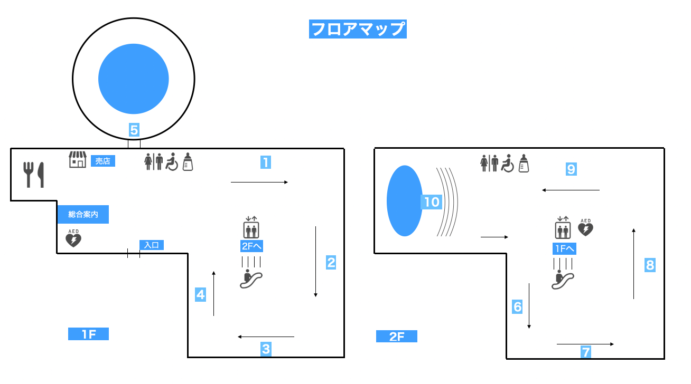
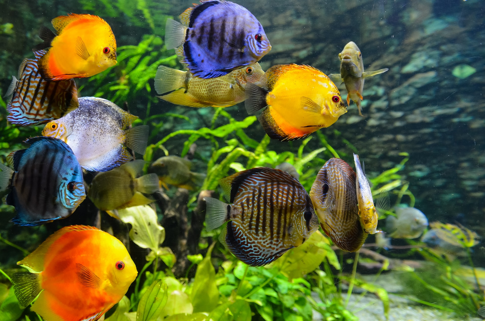
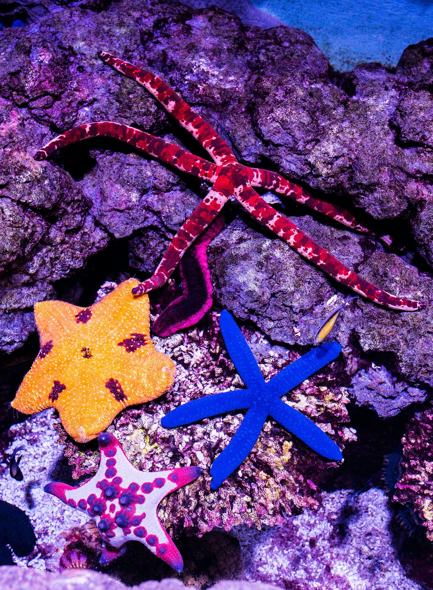
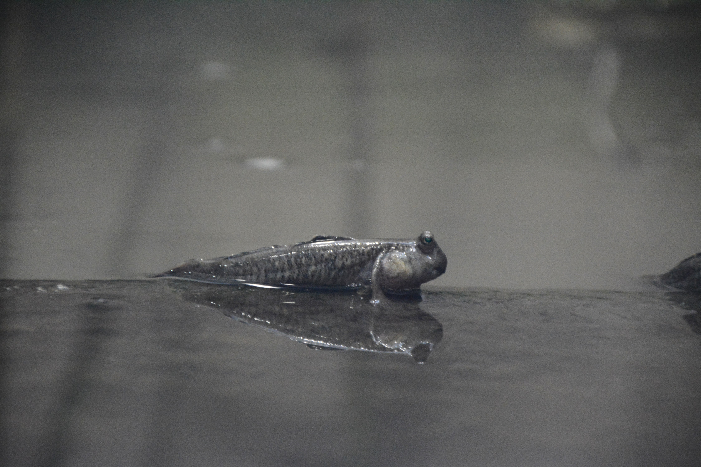
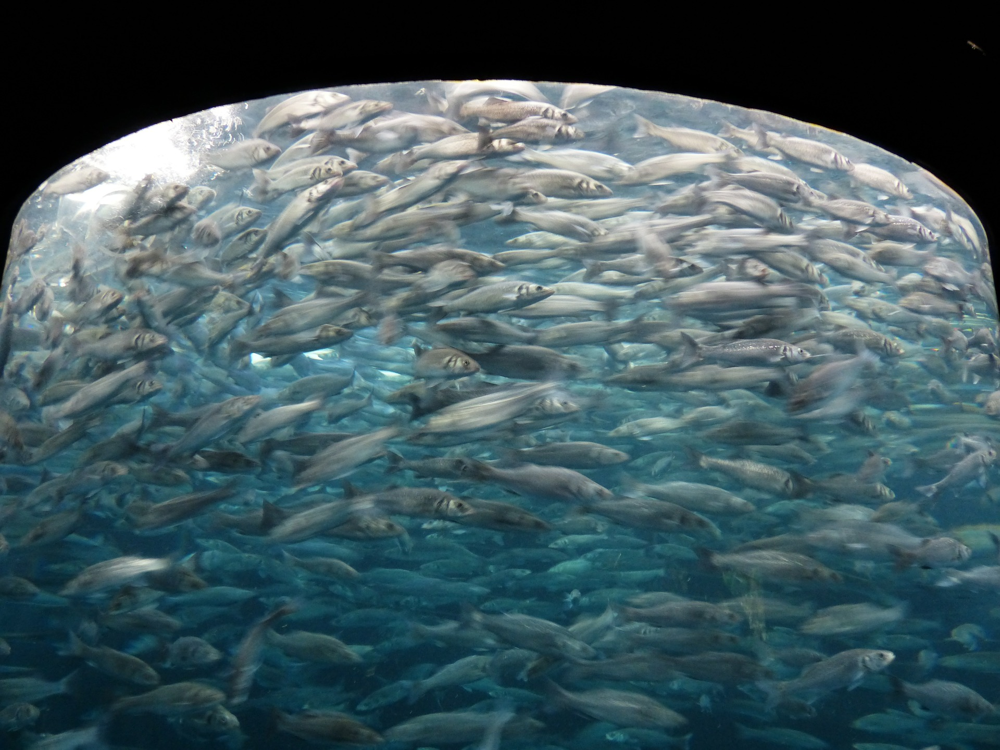

館内案内
当館について
星駆水族館へようこそ。
当館は、福井県あわら市星駆（架空の住所です）にある水族館です。
たくさんの種類のクラゲの他、イルカや地元、北潟湖に生息するいきものなど数多くのいきものを展示公開しています。
目玉その1 クラゲ
クラゲと聞くと、毒があって刺されると怖いイメージがありますよね。
ふわふわユラユラ漂うクラゲ、そんなクラゲには癒し効果がある、なんて研究結果もあるみたいですよ。
変幻自在に浮遊する、多種多様なクラゲたちのやわらかさに、包まれてみてください。

目玉その2 イルカショー
当館ではカマイルカを2頭飼育しており、1階の館外にあるプールにて、毎日イルカショーを行っております。
また、人数限定（各ショーにつき1名）ではありますが、イルカと握手ができるプログラムもご用意しております。
※イルカショーでは、プールの水が客席に飛んでしまうことがあります。少し離れた席でご覧いただくか、ポンチョ等のご用意をお願いします。
(１階売店にて販売もしております。)

フロアマップ
-
① 熱帯魚コーナー
あたたかい海から、数多くの熱帯魚がやってきました。
たくさんの色鮮やかな熱帯魚たちをお楽しみください。 -
②③④ クラゲコーナー

当館では40種類ほどのクラゲを飼育しています。
色や形の違う、多種多様なクラゲたちに癒されていってください。
夜には水槽をライトアップするナイトツアーも開催しております。
幻想的な夜のクラゲたちの姿をご覧ください。 -
⑤ 館外プール（イルカショー）

開館日は全日イルカショーを行っております。
11時〜、13時〜、15時〜の時間で開催します。
ぜひお越しいただき、元気なイルカたちの姿をみてお楽しみください。 -
⑥ ☆ヒトデコーナー
当館の隠れたアイドル、色とりどりのヒトデたちです。
釣りや海水浴で見かけることの多いヒトデです。
意外と海の中でヒトデがどんな風に暮らしているか、知らない方も多いのでは？
運がいいと、ヒトデがエサを食べている姿をみることができるかも！ -
⑦⑧ 北潟湖のいきもの
地元、北潟湖のいきものを展示公開しています。
北潟湖は、福井県あわら市と石川県加賀市に跨る湖です。
ゲンゴロウブナやハゼ、コイなど20種類ほどのいきものを展示公開しております。
華やかさはありませんが、地元のいきものの姿も楽しんでいってください。 -
⑨ ふれあいコーナー

たくさんのコイを飼育しております。
10時と14時には餌やり体験も行っています。
どうぞご家族でお楽しみください。 -
⑩ 日本海の魚たち
巨大水槽にて、日本海近海で生息する魚を展示公開しております。
時々みられるイワシトルネードが目玉です。
着座してゆっくりご覧いただけるよう、座席をご用意しております。